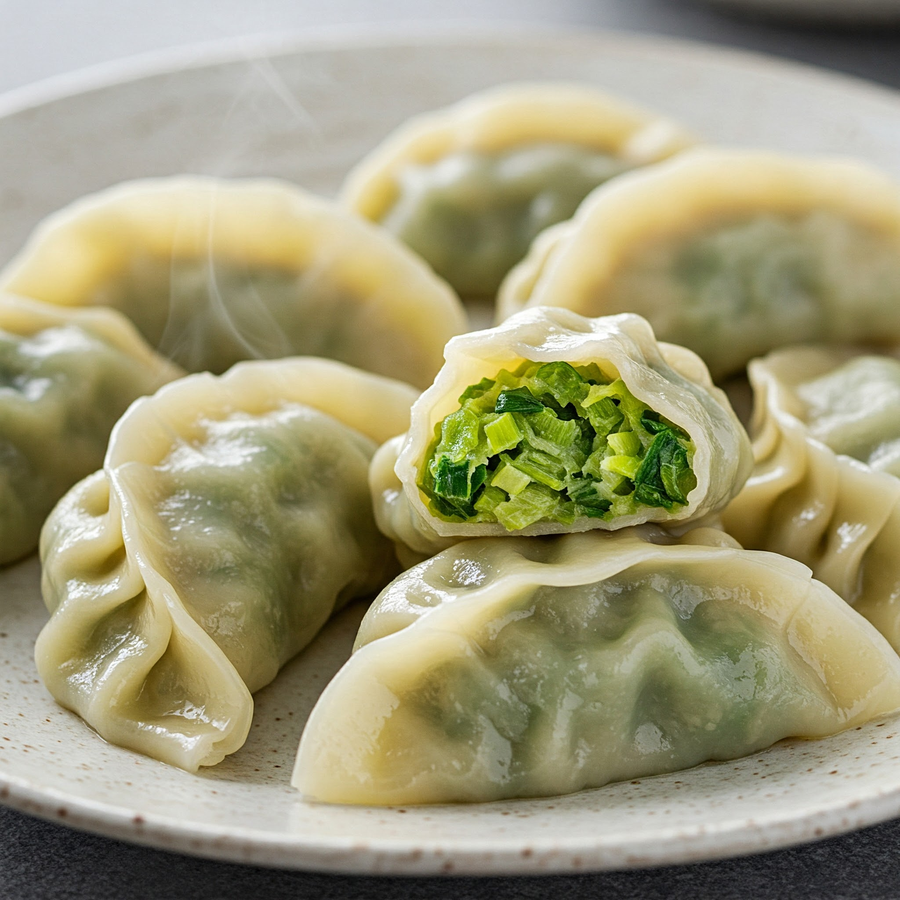

主页
韭菜炒鸡蛋饺子

描述:
韭菜鸡蛋，是春天的味道
韭菜的辛香与鸡蛋的嫩滑，在锅中交织，简单却不失美味。
食材:
- 饺子皮
- 面粉：500克
- 水：适量
- 盐：少许
- 馅料
- 韭菜：300克
- 鸡蛋：3个
- 虾皮：适量（可选）
- 食用油：适量
- 盐：适量
- 香油：少许（可选）
步骤：
- 和面：
- 面粉中加入少许盐，搅拌均匀。
- 分次加入适量水，边加边搅拌，直到面粉成絮状。
- 将面絮揉成光滑的面团。
- 盖上湿布或保鲜膜，醒发20-30分钟。
-
准备馅料：
- 韭菜洗净，沥干水分，切成细末。
- 鸡蛋打入碗中，加入少许盐，搅拌均匀。
- 锅中倒入适量食用油，烧热后倒入鸡蛋液，炒熟并捣成小块。
-
将韭菜末、鸡蛋块、虾皮（如果用）放入碗中，加入食用油、盐、香油（如果用）和胡椒粉（如果用），搅拌均匀。
-
擀饺子皮：
- 将醒发好的面团揉搓成长条，然后分成若干小剂子。
- 将小剂子擀成圆形薄片，边缘略薄。
-
包饺子：
- 取一张饺子皮，放入适量馅料。
- 将饺子皮对折，捏紧边缘。
- 可以根据个人喜好捏出不同的花纹。
-
煮饺子：
- 锅中倒入足量水，烧开后放入饺子。
- 用勺子轻轻推动饺子，防止粘锅。
- 待饺子浮起后，加入少许冷水，再次煮开。
- 重复此步骤2-3次，直到饺子完全煮熟。
- 出锅：
- 将煮熟的饺子捞出，沥干水分。
- 可以蘸醋、酱油等调料食用。